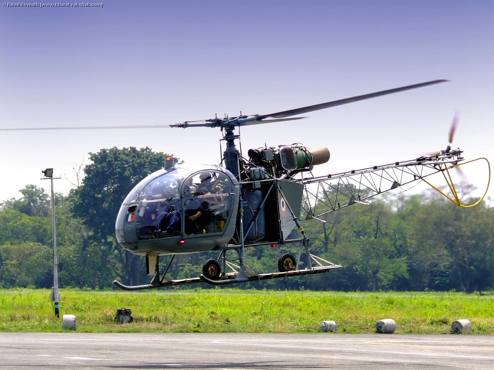

Service History
- Entry into service :
The HAL Cheetah entered service in 1976, tailored for high-altitude operations where other helicopters struggled due to thin air and challenging conditions.
- Major Operations :
The Cheetah has been crucial in India’s military operations and logistical support missions, including during the Kargil War
of 1999. It has also been deployed for various high-altitude patrols, casualty evacuation, and supply runs in Siachen, the highest battlefield in the world.
- Ongoing Service : The Cheetah remains in active service and continues to operate in high-altitude and remote areas, with the HAL LUH
(Light Utility Helicopter) expected to gradually replace it in the coming years.
Technical Specifications
- Weight : Approximately 1.1 tons (empty weight).
- Engine : Powered by a single Turbomeca Artouste IIIB turboshaft engine, producing around 870 horsepower.
- Speed : Capable of speeds up to 192 km/h (119 mph).
- Armament :
Generally unarmed, though it can carry small arms for self-defense in high-threat environments.
- Capacity: Capable of carrying a pilot and up to three passengers or a small cargo load. Can also carry a stretcher for medical evacuation.
- Notable Feature : Exceptional high-altitude performance, enabling operations in extreme mountainous conditions like the Siachen Glacier and other areas in the Himalayas.
- Range : Operational range of around 540 km, making it ideal for short-range transport and supply missions.
- Crew : Operated by a single pilot, with space for additional personnel or cargo depending on the mission.
Historical Significance
The HAL Cheetah’s contribution to India’s defense has been significant, especially in high-altitude operations where
helicopters are indispensable for logistical support, reconnaissance, and evacuation. Its capability to perform reliably
in extreme conditions has been essential to maintaining Indian outposts and operations in remote, high-altitude areas.
The Cheetah has symbolized India’s resilience in maintaining operations on the challenging Himalayan frontiers.
Notable Missions
- Siachen Glacier Operations: The Cheetah has been the backbone of logistics and supply missions
in Siachen, enabling the Indian Army to maintain posts at altitudes exceeding 20,000 feet. It has ferried supplies, ammunition, and personnel to remote outposts where no other airlift capability is feasible.
- Kargil War (1999): The Cheetah played a vital role in high-altitude reconnaissance and casualty evacuation, supporting Indian forces during the Kargil conflict in challenging terrain.
- Disaster Relief Missions: The Cheetah has also participated in various rescue and relief missions, particularly in mountainous regions and areas affected by landslides or natural disasters, where its light footprint and high-altitude capability allow it to reach isolated locations.